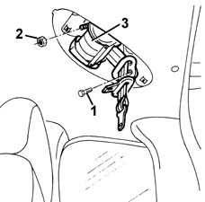
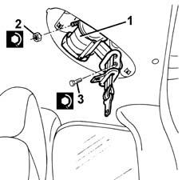

7065B18 CENTRE REAR SEAT BELT - R.R.
- Path
- Procedures > 70 FITTINGS > 7065 SEAT BELTS AND ACCESSORIES > 7065B rear safety belts > 7065B18 CENTRE REAR SEAT BELT - R.R.
- Kind
- repair procedure (removal / refitting; the operation number is the code)
- Applies to
- all engines; all production periods
- Interactive page
- https://sloeber94.github.io/elrnDB-fMltpl/en/#/2892282
Applies to: all engines; all production periods
 Removing
Removing
 Refitting
Refitting7040H70 panel on roof trim for rear central seatbelt - r r .
1. Undo the intermediate linkage bolt.
2. Undo the nut.
3. Remove the seat belt.

Applies to: all engines; all production periods
Refitting
RemovingCheck that the seat belt is undamaged.
1. Fit the seat belt winder.
2. Tighten the nut to the specified torque.
 | Fastening | Component | Ø | Value (daNm) |
|---|---|---|---|---|
2 | Nut | CENTRE REAR SEAT BELT REEL. | M10 x 1.25 | 40 |
3. Tighten the bolt to the specified torque.
| Fastening | Component | Ø | Value (daNm) |
|---|---|---|---|---|
3 | Bolt | CENTRE REAR SEAT BELT IDLER. | - | 40 |
7040H70 panel on roof trim for rear central seatbelt - r r .
